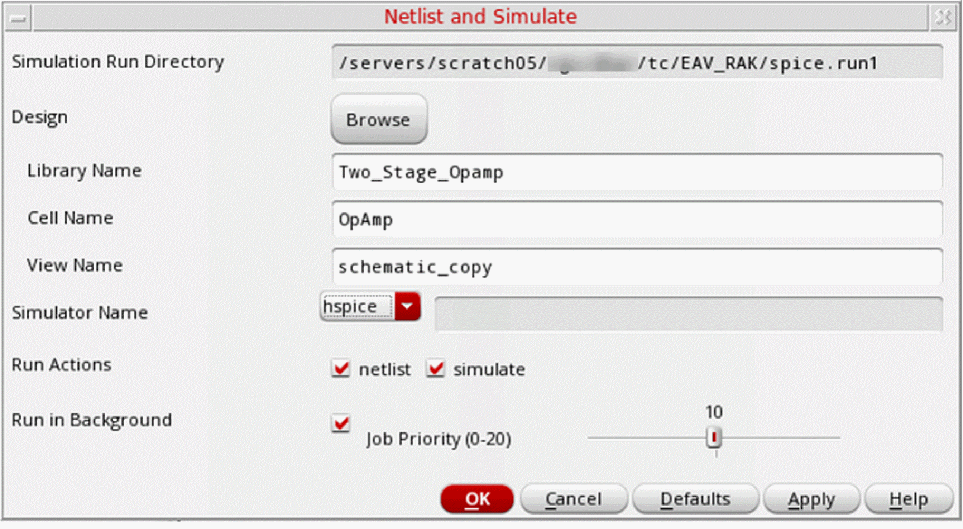

Running a Simulation from the Schematic
You can either run a simulation using an existing netlist or run a complete simulation after generating a new netlist.
-
In the schematic window, select Simulation – Netlist/Simulate.
The Netlist and Simulate form appears.
The Simulation – Netlist/Simulate command is enabled only after you have used the Initialize command to initialize the simulation environment.
Most fields in this form display the values that you specified using the Initialize command. You can edit the values manually or by using the Browse button.
The Simulation Run Directory field in this form is read-only. To change this directory, click Cancel and choose the Initialize command again. - Specify the values and select the options that you want.
-
Click OK.
If you click Cancel, the simulation is not run. If you click Defaults, the values in the form are reset to the default values.
When a background simulation completes, a dialog box appears with the completion status of the simulation.
You cannot run more than one simulation concurrently in the same run directory. Any attempt to run such concurrent simulations displays a message that a simulation is already running in the directory. You can terminate the currently running job and start a new simulation.
Related Topics
Initializing the Simulation Environment
Return to top